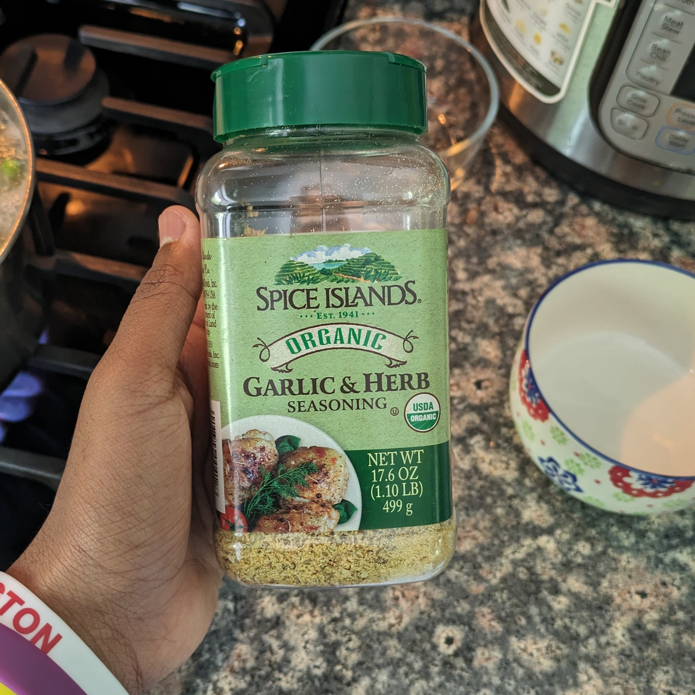
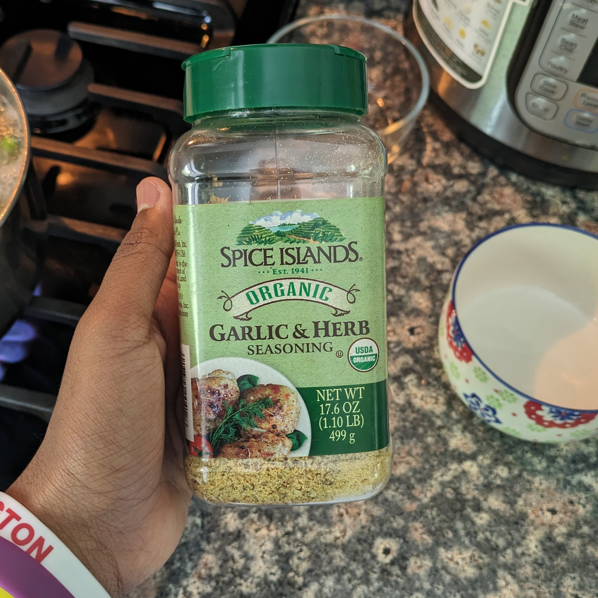

making pasta!
(this should be enough for 5 people)
ingredients:
- 2 frozen chicken patties
- avocado oil
- 8 cups of water
- 1 packet of pasta
- 2 cups of frozen mixed vegetables
- 1 cup of marinara sauce
- 1 tsp garlic and herb seasoning
- a handful of shredded mozzarella
- some olives (as a garnish)
instructions:
- put the oil and chicken on the pan at 2 heat
- put a cover on, and flip them every 2 minutes
- put salt and pepper on the patties
- keep flipping every 2 minutes for about 15 to 20 minutes
- cut the chicken patties up into pieces
- boil water in a separate pot
- put the pasta in the water
- put the vegetables and seasoning in the water
- after pasta is cooked (about 15 minutes), drain the pasta and vegetables
- add the sauce and chicken and mix them in
- add the cheese and olives and mix them in


 

review from adult:
presentation: 9/10, looked a bit messy
taste: 10/10, was really good